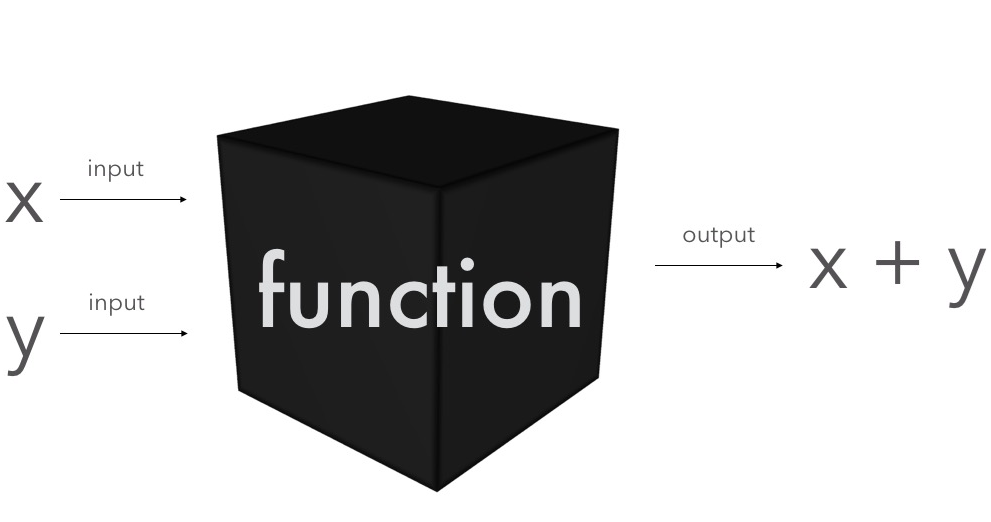
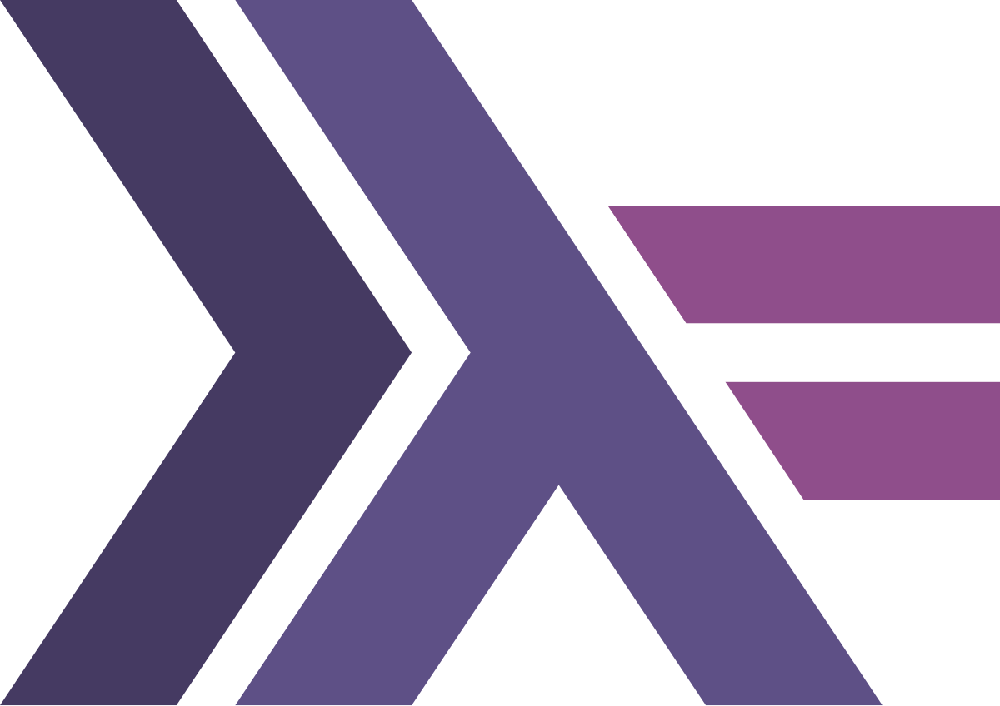

PARADIGMA DE PROGRAMACIÓN FUNCIONAL El paradigma de la programación funcional es un enfoque de desarrollo de software que se basa en la aplicación de funciones matemáticas y el uso de principios como la inmutabilidad, las funciones puras y la ausencia de efectos secundarios  Este paradigma enfatiza "qué hacer" en lugar de "cómo hacerlo", en contraste con otros paradigmas como el imperativo, que se enfoca en instrucciones detalladas paso a paso. La PF se basa en cálculo lambda y concretamente en composición de funciones puras para modelar las soluciones de software. El desarrollo de software va de crear soluciones a problemas pequeños y después componerlos para solucionar un problema mayor. Es por eso que un modelo basado en funciones y en composición de las mismas como únicas herramientas para crear programas, nos brinda una forma muy elocuente de crear software. TÉRMINOS HASKELL Haskell es un lenguaje de programación funcional puro que utiliza el cálculo Lambda como base. Es conocido por su manejo de funciones de primera clase, evaluación perezosa y fuerte tipado estático, lo que permite la creación de programas robustos y fáciles de razonar. Su enfoque en la inmutabilidad y la concurrencia lo hacen ideal para el desarrollo de sistemas concurrentes y paralelos. También es utilizado en aplicaciones de análisis de datos, inteligencia artificial y simulaciones científicas.  EJERCICIO EN HASKELL Descripción: Filtrar los números pares. Multiplicar cada número par por 2. Sumar todos los números resultantes. -- Función para sumar los números pares de una lista sumarPares :: [Int] -> Int sumarPares = foldr (+) 0 . filter(even) -- Uso de la función sumarPares main = print (sumarPares [1, 2, 3, 4, 5, 6]) -- Función para mapear una función sobre una lista aplicarFuncion :: (a -> b) -> [) a[ -> ]b] aplicarFuncion f = map f -- Uso de la función aplicarFuncion con una función anónima main = print (aplicarFuncion(\\ x -> x * x) [1, 2, 3]) -- Función para calcular el factorial de un número factorial :: Int -> Int factorial 0 = 1 factorial n = n * factorial (n - 1) -- Uso de la función factorial main = print ( factorial 5)